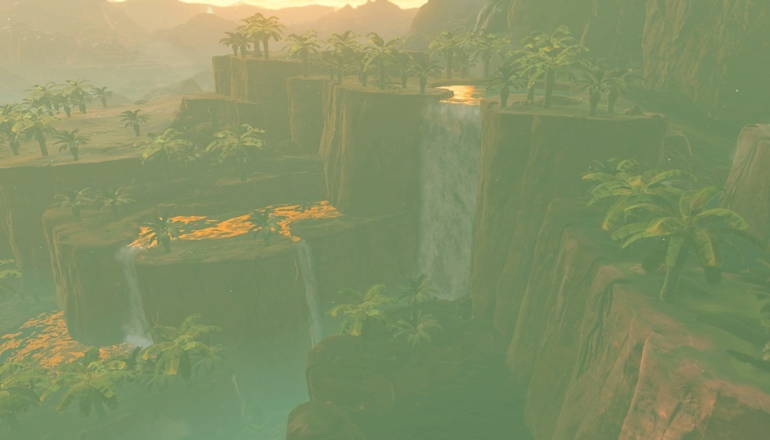
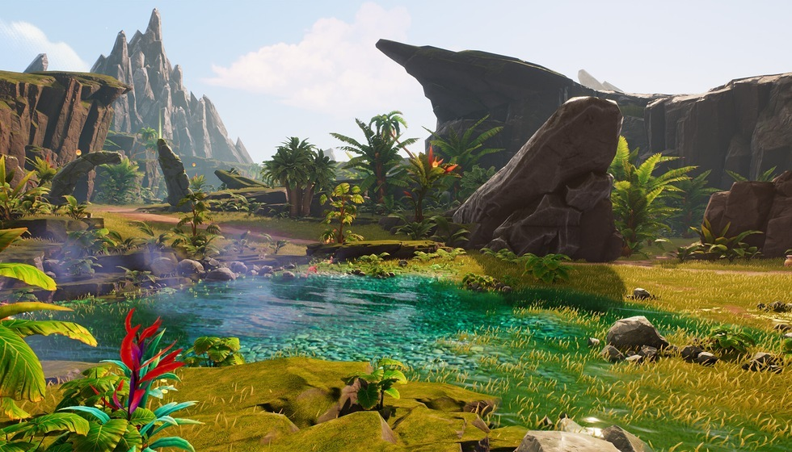
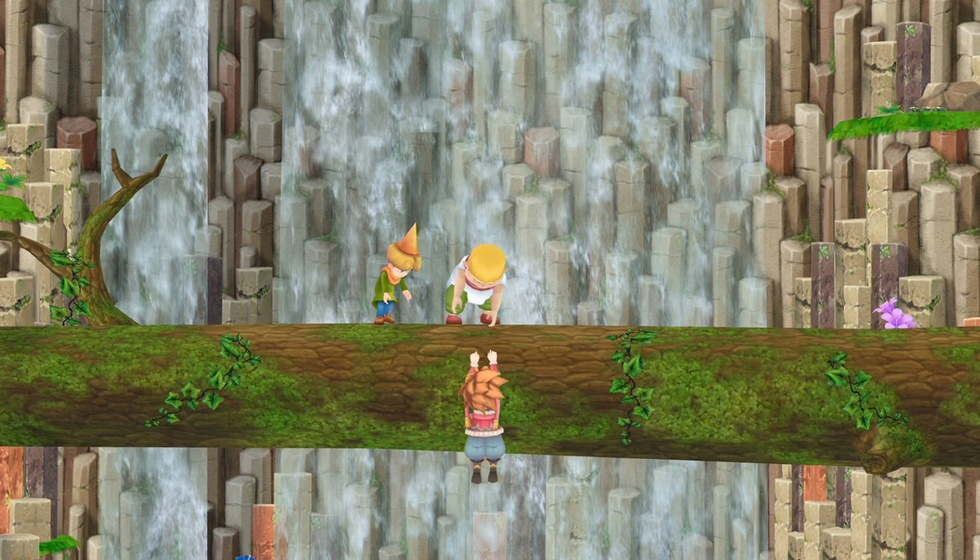

比塞尔达更早的A.RPG神作？现已能在NS玩到

上苦于找不到经典A.RPG游戏的玩家注意了！90年代有款能和《塞尔达传说》齐名的神作，现在靠民间大神移植，终于能在你的掌机上重新玩到了。这游戏叫《圣剑传说》，当年是史克威尔压过任天堂的王牌，玩法侧重动作和角色成长，跟《塞尔达传说》的解谜路线完全不一样。想玩的话得学专属的移植安装步骤，还得接受没中文的小遗憾，今天就给大家仔细讲讲这个经典移植版的各种情况。
想在NS上顺利玩到这款老游戏，民间移植给了明确的操作方法，但每一步都有要注意的地方。首先得去作者NaGaa95的github主页下开源程序，常混玩家社区的人做起来不难，新手得认准官方账号，别下到恶意文件。解压后把文件放进SD卡根目录的Switch文件夹，碰到覆盖提示直接确认就行，不过要提前备份卡里的重要存档，免得不小心丢了。最后装nsp前端文件，在桌面启动游戏就能玩。另外要提醒的是，这个移植只支持大气层破解环境，国内用大气层的玩家不少，但得确认自己的系统版本和移植程序兼容，不然装完可能打不开，建议多去正规玩家群问问最新的兼容情况。
除了基础安装，移植团队还在不断优化游戏体验，不同版本的更新解决了玩家实际操作里的关键问题。现在最新的是1.02版本，之前1.01版本已经修好了存档丢失、音频卡顿和Y键映射错乱的毛病——之前好多玩家反馈刚玩没多久就掉档，现在总算不用提心吊胆了。1.02版本更实用，解决了分辨率超720p时游戏崩溃的问题，用NS OLED版的玩家终于不用怕玩到一半突然黑屏；而且新增了屏幕虚拟摇杆，掌机模式下调360°视角方便多了，之前用实体摇杆总觉得不够灵活，现在单手操作都顺溜，不管是老款续航版还是新款OLED版，更新后体验都能提一大截。
玩家愿意花时间安装体验，核心还是游戏本身的玩法扎实，这些特点放到现在也很有吸引力。游戏里主角能用八种武器和八种属性魔法，每种武器的攻击距离和技能都不一样，蓄满能力槽还能放超必杀，打BOSS的时候特别爽。而且武器不只是用来打怪，还能解谜，比如用斧头砍树开路、流星锤砸破墙壁、鞭子钩着物体移动，不用费脑想复杂解法，对休闲玩家很友好。职业能选战士、僧侣、魔法师三个方向，战士血厚攻高适合新手快速上手，魔法师靠策略输出，喜欢控场的玩家肯定爱用，还有剧情伙伴一起战斗，不会觉得孤单。

【独家观点植入】对比现在NS上主流的A.RPG，像《歧路旅人》和《勇气默示录》，《圣剑传说》的手感其实更对老玩家的胃口。《歧路旅人》画面虽有特色，但回合制战斗节奏偏慢；《勇气默示录》职业搭配复杂，可操作感不强。而《圣剑传说》的即时动作系统，打起来更有爽快感，尤其是武器和解谜结合的设计，比那些纯靠找线索的解谜游戏更直观，不用对着地图到处找提示。现在很多新A.RPG要么堆剧情要么堆画质，反而忽略了最基本的操作手感，《圣剑传说》这种老派的动作玩法，对喜欢纯粹战斗体验的玩家来说，反而成了少见的宝藏，不用花几十个小时看剧情，随时拿出来玩两把都过瘾。

这款游戏的玩法魅力不是凭空来的，背后有几十年的系列积淀和重要的行业地位。早在1991年，史克威尔就给GB掌机做了这款游戏，当时还叫《最终幻想外传》，画面是黑白的，受限于当年的容量，很多想法没能完全实现，但即便这样，当时就有玩家拿它和《塞尔达传说》比。后来在SFC上出了二代，才正式定名《圣剑传说2》，初代也跟着叫《圣剑传说》，慢慢成了史克威尔的三大王牌系列之一——另外两个是《最终幻想》和《浪漫沙加》，能和这两个IP齐名，看得出来它当年的影响力有多大。2015年的时候，SE还把它重制了一遍，登陆了PSV、安卓和iOS平台，重制版用了全3D建模，加了新机制，补完了初代的一些缺憾，操作也更流畅，可惜当时没登陆NS，很多玩家只能用手机玩，体验差了点。
提到经典A.RPG，很多人第一时间会想到《塞尔达传说》，但《圣剑传说》靠差异化定位走出了自己的路，剧情也很吸引人。两者最核心的区别是，《圣剑传说》更看重动作战斗和角色成长，打小怪、升等级、换装备的爽感更足；而《塞尔达传说》主打解谜和迷宫探索，得花更多时间研究机关。剧情上，《圣剑传说》走的是经典拯救世界路线：主角原本是角斗士，偶然听到国王和暗黑魔王想用玛娜之力统治世界，被发现后打下悬崖，之后遇到玛娜女神之女，两人一起对抗帝国，最后靠玛娜和圣剑打败黑暗势力。虽然剧情不算特别复杂，但节奏紧凑，比一些拖沓的长篇剧情更容易代入。
【独家观点植入】不过国内知道《圣剑传说》的玩家其实不多，远不如《塞尔达传说》火，这背后有几个原因。首先当年GB和SFC主机在国内普及度不高，很多玩家小时候接触的都是FC，对掌机上的经典游戏了解少，错过了初代的黄金时期。其次后续的重制版，比如2015年的版本，一直没出官方中文，国内玩家要么啃英文要么等民间汉化，门槛比有官方中文的《塞尔达传说》高很多。现在国内玩家特别喜欢“类塞尔达”游戏，不管是第一方还是第三方作品，只要沾点边就能火。如果《圣剑传说》能有官方中文移植，再优化下操作适配NS手柄，说不定能吸引一批新玩家——毕竟它的动作玩法和《塞尔达传说》不一样，刚好能补上NS上经典动作A.RPG的空缺。
总的来说，这个NS移植版给经典游戏爱好者提供了新的体验方式，但也有一些玩家得提前知道的限制。优点很明显，能在NS上重温90年代的A.RPG神作本身就很值，而且移植团队还在不断优化，解决了存档、分辨率这些关键问题，操作体验越来越完善。但缺点也不能忽略：目前只有英文和日文版本，想切日语得改config.txt文件里的参数，对不懂代码的玩家不太友好；而且程序里没有游戏ROM，得自己找资源，还有版权问题要注意，毕竟是民间移植，有一定风险。如果是喜欢怀旧的老玩家，或者想体验经典A.RPG的新玩家，这款游戏值得试试；但如果对语言和操作门槛比较敏感，可能得等后续汉化或者官方移植。
对NS玩家来说，能在现代掌机上重温90年代的A.RPG经典，本身就是件开心事。虽然《圣剑传说》NS移植版还有没中文、得自备ROM这些小遗憾，但扎实的玩法和不断优化的体验，还是让它成了怀旧玩家的好选择。不知道屏幕前的你，有没有玩过这款经典游戏？如果有汉化大神出手，你会第一时间体验吗？欢迎在评论区分享你的想法，也别忘了点赞关注，后续会给大家带来更多主机游戏的实用内容！
关于我们
📱 公众号名称：三天游戏
✍️ 作者：曾三天
扫码关注公众号，获取每日最新资讯

商务合作与版权
商务合作 / 内容投稿 / 品牌推广
请关注公众号「三天游戏」后台留言联系
版权声明：本文由作者整理，转载需注明出处。